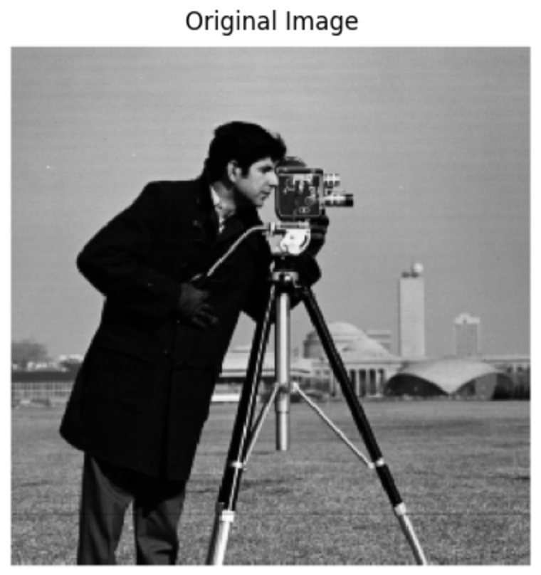

Original Image

Finite Difference Result

Finite Difference Result

Finite Difference Result
This section explores filters and how we can manipulate images with different frequency information. We apply different filtering techniques to highlight image features and create new visual effects.
Original Image
Finite Difference Result
Finite Difference Result
Finite Difference Result

Original Image

DoG Filter Result

Original Image

Sharpened Image

Hybrid Image 1

Hybrid Image 2

Gaussian Stack

Laplacian Stack

Oraple Blending